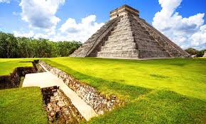
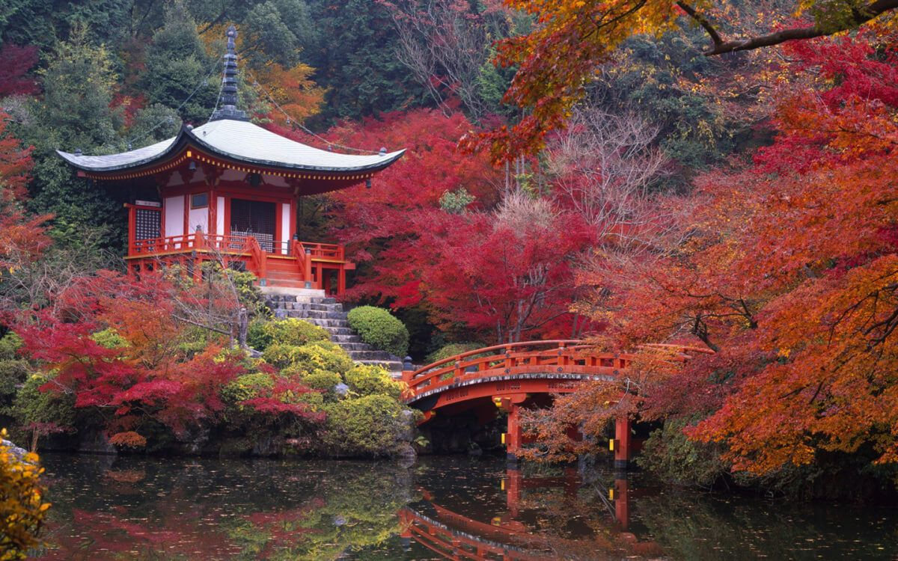
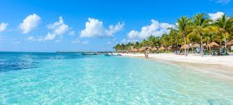

Entrando en el mundo mesoamericano nos encontramos con Teotihuacán, la llamada "Ciudad de los Dioses".
Los visitantes pueden divisar las enormes pirámides del Sol y la Luna como anuncio a la estremecedora sensación que causa situarse en medio de la Calzada de los Muertos para admirar en todo su esplendor una de las imágenes más memorables del México prehispánico.
La torre Eiffel (tour Eiffel, en francés), inicialmente llamada la tour de 300 mètres (torre de 300 metros), es una estructura de hierro pudelado diseñada por los ingenieros Maurice Koechlin y Émile Nouguier, dotada de su aspecto definitivo por el arquitecto Stephen Sauvestre y construida por el ingeniero francés Alexandre Gustave Eiffel y sus colaboradores para la Exposición Universal de 1889 en París.

Si vas a Japón, tienes que visitar Nara. En un breve recorrido en tren desde Kioto llegarás a esta ciudad, que fue capital de Japón y que cuenta con uno de los conjuntos artísticos y paisajísticos más hermosos de todo el país.

El Caribe es una región conformada por el mar Caribe, sus islas y las costas que rodean a este mar. La región se localiza al sureste de América del Norte, al este de América Central y al norte de América del Sur.